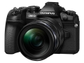

器材库 > APS及其以下画幅可换镜头数码相机 > OM-D E-M1 Mark II

规格总览
产品类型
M4/3画幅可换镜头数码相机
发布日期
2016-11-02
影像规格
影像传感器
Live MOS
影像传感器尺寸
17.4×13.0mm
总像素
2180万
有效像素
2040万
影像处理器
TruePic VIII
色彩空间
sRGB, Adobe RGB
静态图像格式
JPEG, RAW, RAW+JPEG
静态图像尺寸
[RAW] 5184×3888[JPEG] 5184×3888 - 1024×768
短片格式
AVI, MOV
短片尺寸
[MOV] 4096×2160, 3840×2160, 1920×1080, 1280×720[AVI] 1280×720/30p
音频格式
Wave格式（线性PCM立体声/16位，采样率48kHz）
防抖系统
针对静止图像与视频的内置机身5轴防抖系统
除尘系统
超声波除尘（图像传感器除尘系统）
镜头和对焦
镜头卡口
Micro 4/3
对焦系统类型
混合自动对焦（相位侦测/对比度检测自动对焦）
对焦点
121点十字相位检测自动对焦与121点对比度自动对焦
对焦模式
单次自动对焦(S-AF) /持续自动对焦(C-AF) /手动对焦(MF) /S-AF + MF /自动追踪对焦(C-AF + TR) /预设MF
AF辅助灯/光
有
手动对焦
支持
曝光控制
测光模式
点测光, ESP, 中央加权测光
测光范围
-2EV~20EV
曝光模式
iAuto (实时指南可用)、P：程序自动曝光 (可实施程序设定的位移)、A：光圈优先自动曝光、 S：快门优先自动曝光、M：手动曝光 (实时B门、实时T门与实时合成等功能可用)、自定义项 1～3、艺术滤镜、水下广角摄影/水下微距摄影(可指定给Fn1按钮)
创意滤镜
浓郁色调，柔焦效果，增亮色调&淡化，柔光效果，照片怀旧颗粒效果，针孔相机，立体效果，负片冲印效果，柔和怀旧，戏剧效果，线框效果，水彩画，古典，部分取色
快门速度
焦平面快门：1/8000 - 60秒，曝光补偿可选（1/3、1/2与1）电子前帘快门（防震模式）：1/320 - 60秒电子快门（静音模式）：1/3200 - 60秒）
闪光同步速度
1/250秒
曝光补偿
±5EV以1/3或1/2或1EV级调整
自动曝光锁
有
自动包围曝光
0.3 / 0.7 / 1.0 EV步长中的2、3或5帧可选、 0.3/0.7EV 步长中的7帧可选
ISO感光度
AUTO ISO （默认）；LOW(约64) ‐ 6400 ，可自定义上限(200 - 6400)手动 ISO : LOW (约64), 200 - 25600 (可在1/3或1EV为一挡调节）
白平衡
自动白平衡、七个白平衡预设值、四个白平衡捕获值与自定义白平衡（K值设置）
自拍
设定时间：12秒、2秒与自定义 (等待时间： 1-30秒；拍摄间隔：0.5 / 1 / 2 / 3秒；镜头数：1-10, 每次自动对焦：开启/关闭)
连拍
高速连续拍摄约每秒15张，低速连续拍摄约每秒10张
闪光灯
外接闪光灯
FL-50R、FL-36R、FL-20、FL-14、FL-300R、FL-600R、FL-900R与STF-8
取景器/显示屏
取景器
EVF电子取景器
取景范围
100%
取景放大倍率
约1.30倍
屈光度调节范围
-4 ~ +2m-1
LCD尺寸
3.0英寸
LCD像素
约103.7万
LCD特性
触摸屏, 翻转屏
亮度调节级数
±7级
Live View
有
文件输入/输出
存储卡
SD/SDHC, SDXC, Eye-Fi
数据接口
USB3.0
视频/音频接口
D型HDMI接口
无线功能
Wi-Fi
支持打印协议
PictBridge, DPOF
电源
电池
锂离子电池BLH-1
续航能力
静态图片：可拍摄约440张视频：可连续拍摄约90分钟
机身规格
颜色
黑色
尺寸
134.1×90.9×68.9mm
重量
仅机身约498g / 含电池和存储卡约574g
其它
配件端口
热靴, 快门线, 耳机, 麦克风输入端子
支持语言
中文（简体）, 中文（繁体）, 英语, 日语, 捷克语, 丹麦语, 荷兰语, 芬兰语, 法语, 德语, 印度尼西亚语, 意大利语, 韩语, 挪威语, 波兰语, 葡萄牙语, 俄语, 西班牙语, 瑞典语, 土耳其语, 匈牙利语, 泰语, 希腊语, 乌克兰语, 罗马尼亚语, 保加利亚语, 克罗地亚语, 斯洛伐克语, 斯洛文尼亚语, 拉脱维亚语, 爱沙尼亚语, 塞尔维亚语, 马来语
工作温度
-10 ~ +40℃
工作湿度
工作时30~90% / 存储时10~90%
附件
USB数据线、线夹、肩带、说明书、质保卡、闪光灯 FL-LM3、锂离子电池BLH-1与锂离子快速充电器BCH-1
匿名网友2018-01-27 11:304.69 分
操作性 5.00功能性 5.00美观性 5.00趣味性 5.00耐用性 4.50性价比 3.50解像力 4.50色彩还原 5.00
康花花2017-03-16 23:194.63 分
操作性 5.00功能性 5.00美观性 4.50趣味性 4.50耐用性 5.00性价比 4.00解像力 4.50色彩还原 4.50
产品图 / 样片
OM-D E-M1 Mark II
评测 / 相关文章
- 详细内容 （存档）
- 快打旋风 奥林巴斯OM-D E-M1II评测 （存档）
- 轻量化专业微型单电奥林巴斯 E-M1 Mark Ⅱ 长测体验报告 （存档）
- ［资讯］奥林巴斯高像素解析模式下胜过D850 （存档）
- ［资讯］外媒公布A7RIII、D850等防滴溅能力 （存档）
- ［试用］我用EM1- MarkII拍草原 （存档）
- ［资讯］E-M1II和PEN-F的固件更新 （存档）
- ［试用］A7RII与EM1II在新西兰的PK （存档）
- ［资讯］奥林巴斯更新E-M1 II新固件V1.1 （存档）
- ［资讯］奥巴采访：目前传感器已达到性能极限 （存档）
- ［资讯］印象深刻 哈苏X1D碰撞奥巴E-M1 II （存档）
- ［资讯］DXO给出奥巴E-M1 II测试得分 （存档）
相关文章
- ［资讯］奥林巴斯高像素解析模式下胜过D850 （存档）
- ［资讯］外媒公布A7RIII、D850等防滴溅能力 （存档）
- ［试用］OLYMPUS E-M1 Mark Ⅱ 长测体验报告 （存档）
- ［试用］我用EM1- MarkII拍草原 （存档）
- ［资讯］E-M1II和PEN-F的固件更新 （存档）
- ［试用］A7RII与EM1II在新西兰的PK （存档）
- ［资讯］奥林巴斯更新E-M1 II新固件V1.1 （存档）
- ［资讯］奥巴采访：目前传感器已达到性能极限 （存档）
- ［资讯］印象深刻 哈苏X1D碰撞奥巴E-M1 II （存档）
- ［资讯］DXO给出奥巴E-M1 II测试得分 （存档）
- ［试用］快打旋风 奥林巴斯OM-D E-M1II评测 （存档）
- ［资讯］奥林巴斯E-M1II背后的传奇故事（下） （原站已下线）
- ［试用］奥林巴斯E-M1 II实拍样张 （原站已下线）
- ［资讯］奥林巴斯E-M1II背后的传奇故事（上） （原站已下线）